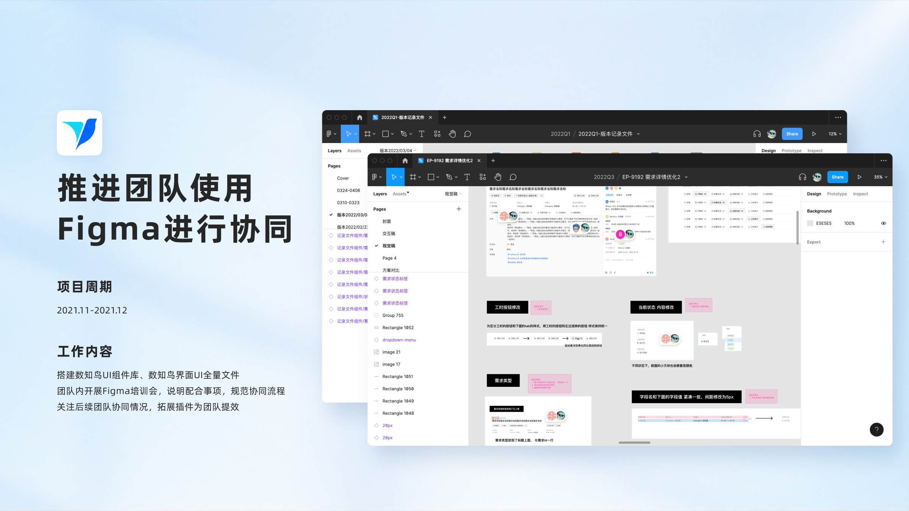
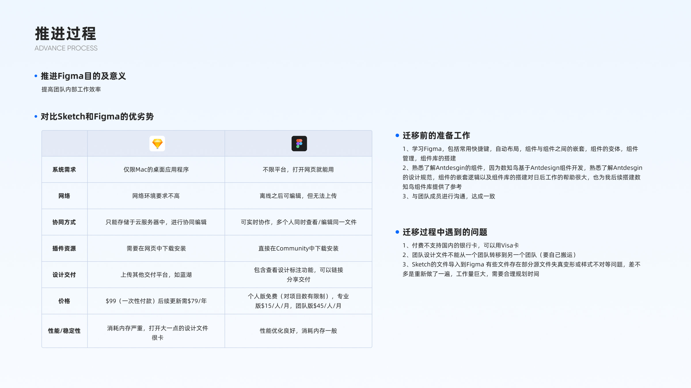
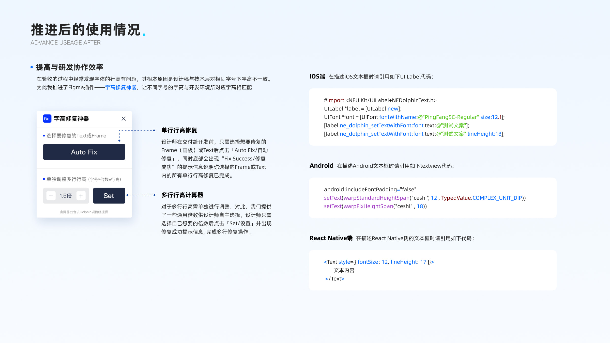
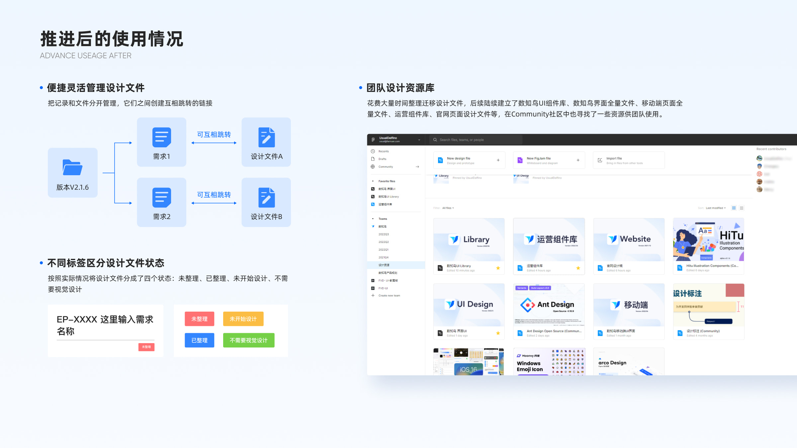

Preface写在最前
“2021年大部分公司主要使用的设计软件是Sketch，帆软也不例外。Sketch长时间运行会导致内存占用高、设备卡顿，又存在无自动布局、团队协同能力弱等痛点。在团队计划统一更换设计工具时，我提议切换Figma，并在数知鸟业务线率先启用，打造团队迁移标杆。”
Scope负责内容
- 设计资产迁移
- 组件库搭建
- 内部培训
- 插件分享




“2021年大部分公司主要使用的设计软件是Sketch，帆软也不例外。Sketch长时间运行会导致内存占用高、设备卡顿，又存在无自动布局、团队协同能力弱等痛点。在团队计划统一更换设计工具时，我提议切换Figma，并在数知鸟业务线率先启用，打造团队迁移标杆。”


